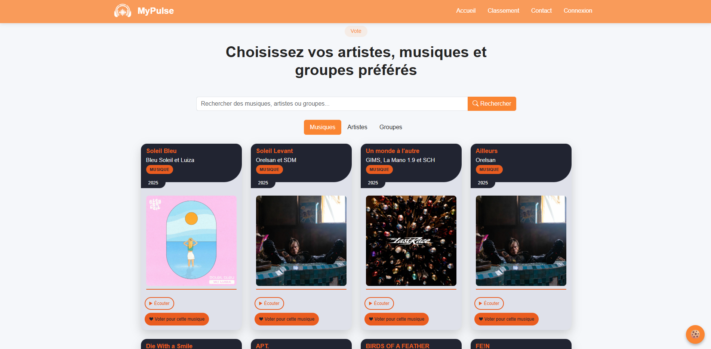

Preuve 01 / 03 — SAE S3, Janvier 2026
MyPulse — Plateforme de vote musical
Développement full-stack en binôme (HOJA & SCHMITT) d'une plateforme communautaire de vote musical : architecture MVC PHP, gestion de rôles, vote asynchrone AJAX et conformité RGPD.
Contexte et ressources mobilisées
SAE S3 — créer une plateforme permettant de soumettre et voter pour des contenus musicaux (musiques, artistes, groupes). Stack : PHP 8.3 MVC, MySQL/PDO, Bootstrap, AJAX, Apache/Wampserver, Git/GitHub, Trello.
Activités et implication
- Conception et implémentation du système d'authentification multi-rôles (Invité / Basique / Certifié / Admin)
- Workflow complet des contenus : soumission → validation admin → classement → archivage
- Vote asynchrone AJAX avec contrainte d'unicité (une voix par utilisateur par catégorie)
- Tableau de bord admin pour la modération et la gestion des membres certifiés
- Système de gestion des consentements cookies (RGPD)
Apprentissages clés
- Maîtrise de l'architecture MVC PHP artisanale et de la séparation des responsabilités
- Gestion d'états complexes (5 statuts de contenu, 4 rôles) modélisés directement en base
- Première implémentation AJAX en production : callbacks, mise à jour partielle du DOM, gestion d'erreurs réseau
- Application concrète du RGPD : minimisation des données, consentements, durées de rétention
Traces sélectionnées
Rapport final (24 pages)
Architecture MVC, roadmap MVP1/MVP2, modèle de données et choix techniques justifiés — livrable cosigné HOJA & SCHMITT.

Interface de découvertePage de navigation : recherche d'artistes, musiques et groupes avec affichage en cartes et filtres par onglets.